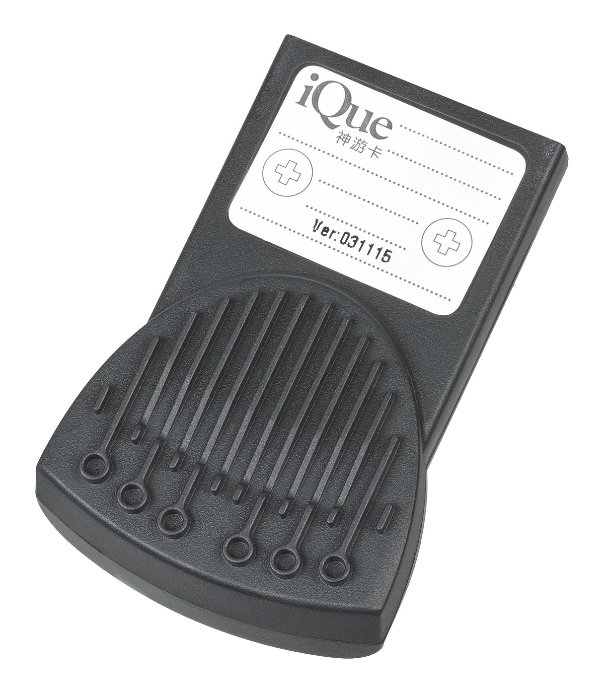

By: Binary64
Ray Buffer iQue is a basic replacment frame buffer for the nintendo iQue/N64 built to run raytracers,
it was made to fix a plethora of graphical bugs and make games run fater but is centralized around raytracers and enabling raytracing.
Currently it is still in development and is just a basic replacment that can run of a iQue card (64mb) with the help of a
ROM patch to redirect all frame buffer calls to the memory adress in the iQue card.
The aim is to one day bring raytracers and better graphics to the iQue